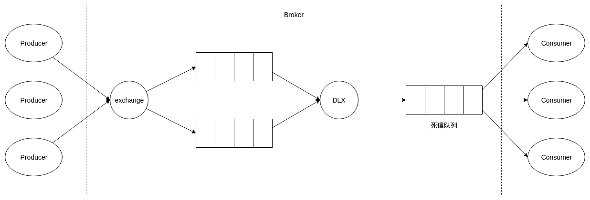

延时任务实现方案
业务场景
我们买火车票或者叫外卖的时候，下完单之后会跳转到支付页面，页面里通常会有一个计时器，要求在指定时间内完成支付，否则订单就会被自动取消。这就是延时任务的一个典型业务场景。分析这个场景，其实最关键的就是如何在订单超时的时候立即触发取消订单的动作。
那么如何实现这种延时业务呢？通常有以下4种方案。
定时任务轮询db
用户下单后db中会生成一条订单记录，记录了订单号、用户ID、创建时间、订单详情、订单状态等信息。假设超时时间是600秒，我们后台起一个定时任务，每隔固定时间运行一次，每次扫描db中的超时订单select * from order where createTime <= now()-600，然后取消查询到的订单。
这种方法实现简单，但是有很多缺点。超时时间通常是秒级的，如果定时任务每秒运行一次，那么就相当于每秒就要对订单表做一次扫描，这是相当消耗db资源的操作，因此定时任务一般不会设置为秒级；但是如果设置为分钟级，又会牺牲即时性，比如600秒超时，很有可能660秒的时候订单才被取消。
DelayQueue
JDK的DelayQueue（延迟队列）是无界阻塞队列，只有在延迟期满时才能从中获取元素。每生成一个订单，在把订单记录到db的同时，要把订单id等信息投递到延迟队列中去，队列会按照超时时间进行排序，最先超时的订单排在队列的头部；起一个单独的线程不断地从队列中摘取元素然后去做取消订单的动作。
这种方法最大的缺点就是没有将超时信息持久化，服务重启之后延迟队列的元素不会被恢复。
redis的zset
在redis中创建一个key是”delayOrders”的zset，每个member就是订单ID，member的score就是该订单的超时时间戳。我们每次从zset中取出score最小也就是最先超时的元素，判断其是否超时，如果超时就将其从zset中删除并取消订单，如果未超时就继续执行下一次循环。
RabbitMQ的TTL+DLX
RabbitMQ可设置消息过期时间（TTL），当消息过期后可以将该消息投递到队列上设置的死信交换器（DLX）上。然后投递到死信队列中，重新消费。

四种方案对比
| 方案 | 优点 | 缺点 |
|---|---|---|
| 定时任务轮询db | 实现简单、无技术难点、异常恢复、支持分布式/集群环境 | 影响数据库性能、时效性差 |
| DelayQueue | 实现简单、性能较好 | 无法异常恢复、分布式/集群实现困难 |
| redis的zset | 解耦、异常恢复、扩展性强、支持分布式/集群环境 | 增加redis维护、占用带宽 |
| RabbitMQ的TTL+DLX | 解耦、异常恢复、扩展性强、支持分布式/集群环境 | 增加RabbitMQ维护、占用带宽 |